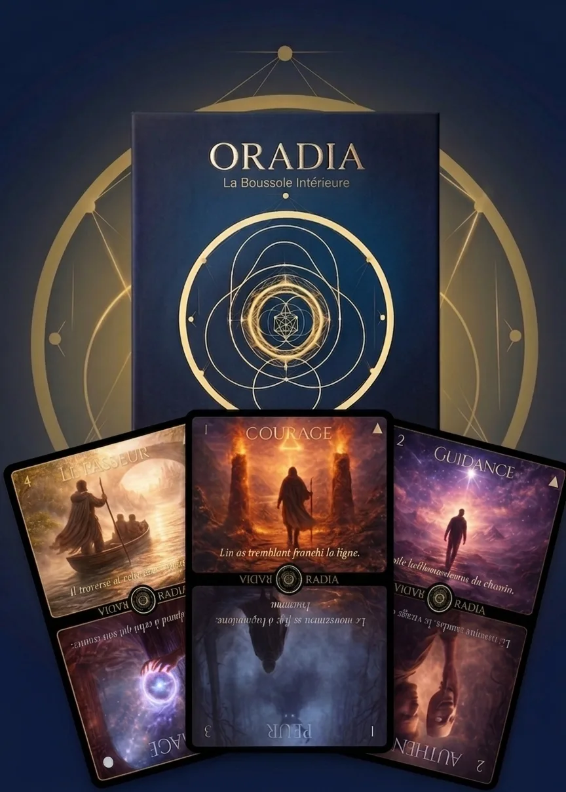

Les messages de l'Oracle pour vous
Offrez un tirage à un proche
Partagez votre lien : la personne qui l'utilise reçoit 1 tirage gratuit en plus, et vous aussi.
Curieux de savoir ce que d'autres observent dans les jours qui suivent un tirage ?
Découvrir l'étude des synchronicitésImaginez avoir l'Oracle Oradia physique entre vos mains. 64 cartes, un outil de transformation à utiliser quand vous en avez besoin, sans limite.

"L'Oracle Oradia m'accompagne dans mes moments de doute. Avoir les cartes physiques change tout, c'est une expérience bien plus profonde et intime."
Un mot de ma part
"Ce tirage n'est qu'un premier éclairage. Si quelque chose a résonné en vous, une carte, une phrase, un silence, je serai sincèrement ravi d'aller plus loin avec vous."
En consultation, je prends le temps de lire votre tirage avec vous, de comprendre ce qui vous a amené ici, et de vous offrir des clés concrètes pour avancer. Ce n'est pas une séance générique, c'est une conversation vraie, à votre rythme.
Réserver une guidance